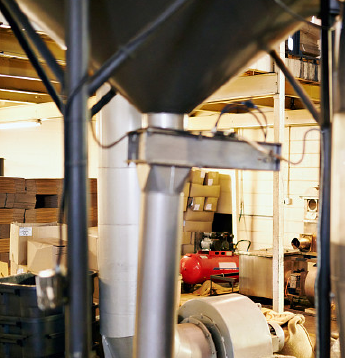
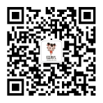

400-650-0612
简介Introduction
国花珍萃富含“植物脑黄金” 红孩儿牡丹籽油是由牡丹籽提取的木本坚果植物油，是中国特有的，因其营养丰富而独特，又有医疗保健作用，被有关专家称为“世界上最好的油，”是植物油中的珍品，也是中国独有的健康保健食用油脂。牡丹籽是牡丹植株的精华结晶，传承了牡丹本身具有的一切特性外，它更有自己独特的医药和营养成分，牡丹种子是受果壳和种壳双层保护的坚果，具有天然的“长寿”基因。菏泽先后与北京林业大学、北京大学..........
总营养价值最高 成份结构最合理
中国林科院通过对牡丹籽油检测分析后发现，油内含有大量的α-亚麻酸、α-亚油酸、牡丹酚、牡丹皂甙、岩藻甾醇、牡丹多糖等诸多极其重要的生物活性物质。
经国际权威谱尼测试分析：牡丹籽油不饱和脂肪酸占比高达92.26%，其中α-亚麻酸含量高达42%以上，α-亚油酸28%左右，是橄榄油的70倍，鱼油的5倍。特别是所富含的油酸（单不饱和脂肪酸）与α-亚油酸和α-亚麻酸的比例约为1:1:1.5，是非常完美的黄金比例，是一种优质的木本坚果油，多项指标也都高于其他油种，又不易氧化沉积在人体血管壁、心脏冠状动脉等部位。因其营养丰富而独特，又有医疗保健作用，被专家称为“世界上最好的油”“植物油中的珍品”，是迄今为止所发现的油脂中最适合人体营养的油脂，也是中国独有的健康保健食用油脂。

权威检测 国家认证
中国林科院通过对牡丹籽油检测分析后发现，油内含有大量的α-亚麻酸、α-亚油酸、牡丹酚、牡丹皂甙、岩藻甾醇、牡丹多糖等诸多极其重要的生物活性物质。
经国际权威谱尼测试分析：牡丹籽油不饱和脂肪酸占比高达92.26%，其中α-亚麻酸含量高达42%以上，α-亚油酸28%左右，是橄榄油的70倍，鱼油的5倍。特别是所富含的油酸（单不饱和脂肪酸）与α-亚油酸和α-亚麻酸的比例约为1:1:1.5，是非常完美的黄金比例，是一种优质的木本坚果油，多项指标也都高于其他油种，又不易氧化沉积在人体血管壁、心脏冠状动脉等部位。因其营养丰富而独特，又有医疗保健作用，被专家称为“世界上最好的油”“植物油中的珍品”，是迄今为止所发现的油脂中最适合人体营养的油脂，也是中国独有的健康保健食用油脂。
天然补脑 健脑益智
中国林科院通过对牡丹籽油检测分析后发现，油内含有大量的α-亚麻酸、α-亚油酸、牡丹酚、牡丹皂甙、岩藻甾醇、牡丹多糖等诸多极其重要的生物活性物质。
经国际权威谱尼测试分析：牡丹籽油不饱和脂肪酸占比高达92.26%，其中α-亚麻酸含量高达42%以上，α-亚油酸28%左右，是橄榄油的70倍，鱼油的5倍。特别是所富含的油酸（单不饱和脂肪酸）与α-亚油酸和α-亚麻酸的比例约为1:1:1.5，是非常完美的黄金比例，是一种优质的木本坚果油，多项指标也都高于其他油种，又不易氧化沉积在人体血管壁、心脏冠状动脉等部位。因其营养丰富而独特，又有医疗保健作用，被专家称为“世界上最好的油”“植物油中的珍品”，是迄今为止所发现的油脂中最适合人体营养的油脂，也是中国独有的健康保健食用油脂。
α-亚麻酸 你了解吗
中国林科院通过对牡丹籽油检测分析后发现，油内含有大量的α-亚麻酸、α-亚油酸、牡丹酚、牡丹皂甙、岩藻甾醇、牡丹多糖等诸多极其重要的生物活性物质。
经国际权威谱尼测试分析：牡丹籽油不饱和脂肪酸占比高达92.26%，其中α-亚麻酸含量高达42%以上，α-亚油酸28%左右，是橄榄油的70倍，鱼油的5倍。特别是所富含的油酸（单不饱和脂肪酸）与α-亚油酸和α-亚麻酸的比例约为1:1:1.5，是非常完美的黄金比例，是一种优质的木本坚果油，多项指标也都高于其他油种，又不易氧化沉积在人体血管壁、心脏冠状动脉等部位。因其营养丰富而独特，又有医疗保健作用，被专家称为“世界上最好的油”“植物油中的珍品”，是迄今为止所发现的油脂中最适合人体营养的油脂，也是中国独有的健康保健食用油脂。
功效
红孩儿牡丹籽油
 “红孩儿”牡丹籽油自然孕育而成，源生态，营养丰富结构均衡，天然比例易吸收，无需配伍，无需调和，具有健脑、益智、明目、强身的生理作用，集高端食用油的优点于一身。
“红孩儿”牡丹籽油自然孕育而成，源生态，营养丰富结构均衡，天然比例易吸收，无需配伍，无需调和，具有健脑、益智、明目、强身的生理作用，集高端食用油的优点于一身。
“红孩儿”遵循“健康的、专业的、营养的”品牌格调，积极传播倡导“健康成长”的品牌文化，以人为本,以爱为核心，用心传承爱，为学生健康成长加油。
高举“让人类共享健康油”的神圣使命，做生活中平凡的事、点滴的情，积极分享，传播出爱国家、爱社会、爱家庭的满满正能量。
“红孩儿”牡丹籽油自然孕育而成，源生态，营养丰富结构均衡，天然比例易吸收，无需配伍，无需调和，具有健脑、益智、明目、强身的生理作用，集高端食用油的优点于一身。
“红孩儿”遵循“健康的、专业的、营养的”品牌格调，积极传播倡导“健康成长”的品牌文化，以人为本,以爱为核心，用心传承爱，为学生健康成长加油。
高举“让人类共享健康油”的神圣使命，做生活中平凡的事、点滴的情，积极分享，传播出爱国家、爱社会、爱家庭的满满正能量。
美食篇安全、纯净、健康于一体的“生活伴侣”
妙用篇妙用12招，好用爽到爆！给生活加点料，幸福新时代与“健康”同行让“美丽”绽放！
“红孩儿”牡丹籽油——开启人类食用油的健康新篇章
- 2017年5月28日，“红孩儿”牡丹籽油通过专家论证，宣告“红孩儿”牡丹籽油智慧人类健康之油，必将引领康饮食的新时代。
- 2018年1月，“红孩儿”牡丹籽油荣获全国消费者放心满意产品。
- 2018年4月，“红孩儿”牡丹籽油荣获中国国际高端食用油博览会金奖。
- 2018年4月，深圳前海股权交易中心正式挂牌，代码669696；进入资本市场，加快国际市场的战略布局，践行“让人来共享健康油”的神圣使命。
-
国家林业局复原局长
李育才
中国牡丹专家委员会主任2018年4月，深圳前海股权交易中心正式挂牌，代码669696；进入资本市场，加快国际市场的战略布局，践行“让人来共享健康油”的神圣使命。
-
国家林业局复原局长
李育才
中国牡丹专家委员会主任2018年4月，深圳前海股权交易中心正式挂牌，代码669696；进入资本市场，加快国际市场的战略布局，践行“让人来共享健康油”的神圣使命。
-
国家林业局复原局长
李育才
中国牡丹专家委员会主任2018年4月，深圳前海股权交易中心正式挂牌，代码669696；进入资本市场，加快国际市场的战略布局，践行“让人来共享健康油”的神圣使命。
-
国家林业局复原局长
李育才
中国牡丹专家委员会主任2018年4月，深圳前海股权交易中心正式挂牌，代码669696；进入资本市场，加快国际市场的战略布局，践行“让人来共享健康油”的神圣使命。
-
国家林业局复原局长
李育才
中国牡丹专家委员会主任2018年4月，深圳前海股权交易中心正式挂牌，代码669696；进入资本市场，加快国际市场的战略布局，践行“让人来共享健康油”的神圣使命。
-
国家林业局复原局长
李育才
中国牡丹专家委员会主任2018年4月，深圳前海股权交易中心正式挂牌，代码669696；进入资本市场，加快国际市场的战略布局，践行“让人来共享健康油”的神圣使命。
牡丹籽油与同类对比Similar to the comparison
牡丹籽油所含a- 亚麻酸是橄榄油的140倍
究表明：牡丹籽油中富含蛋白质、锌、钙、镁、磷及维生素群、类胡萝卜素、氨基酸、多糖和多种不饱和脂肪酸。其中：不饱和脂肪酸含量超过92%，尤其是a-亚麻酸的含量超过42%，是葵花油的9.3倍，茶籽油的18.2倍、玉米油的69.8倍、花生油的108倍、橄榄油的60多倍。另外还含有独特的牡丹皂甙、牡丹酚、牡丹多糖、牡丹甾醇等极其重要的天然生物活性成份。由牡丹籽提取的植物油是中国特有的木本坚果油，其营养丰富而独特。
联系我们Contact us
北京百瑞众康农业科技发展有限公司
总部邮编：100000
总部地址：北京星光影视园新媒体大厦17号楼7层
总部电话：400-650-8612
- 微商城
二维码 - 公众号
二维码 - 公司网站
二维码
“红孩儿”旗舰店
地址：海淀区翠微路12号凯德Mall三层K01
地址：大兴区绿地缤纷城二期二层-ZD03
地址：丰科路6号院二层主-2F-17
包头市青山区正翔国际北京华联负一层